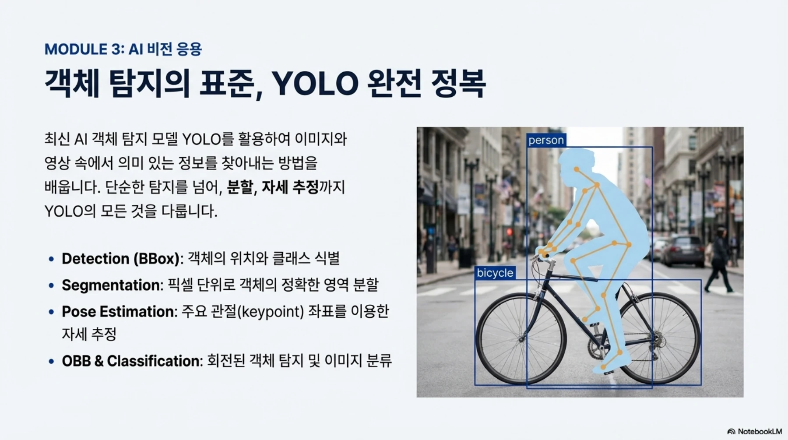
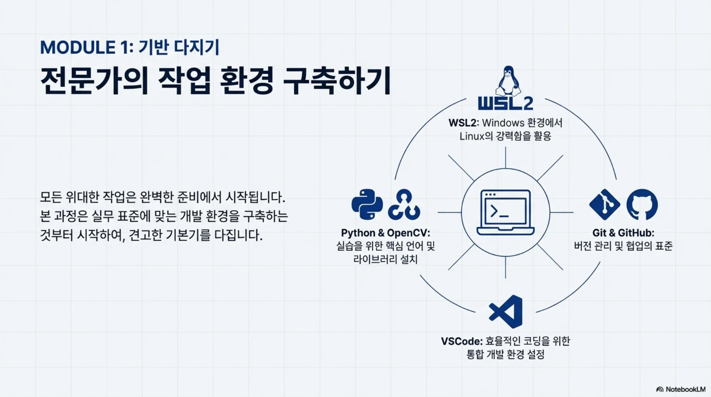
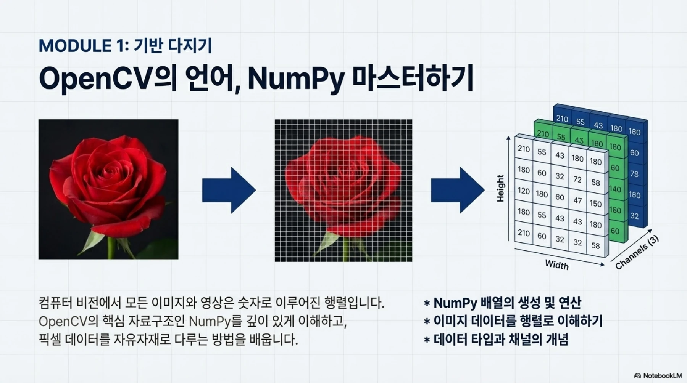
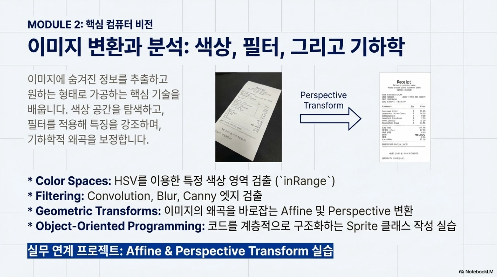
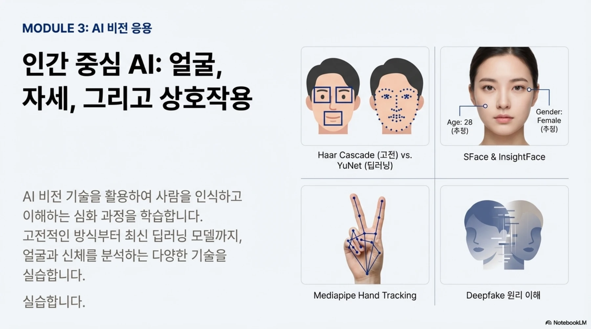
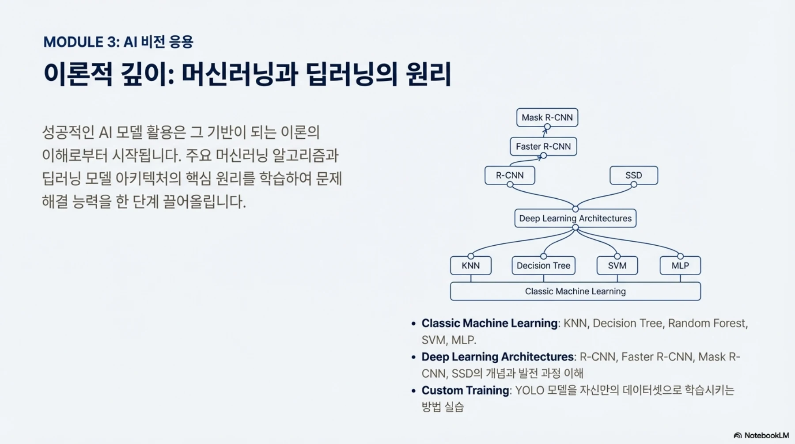
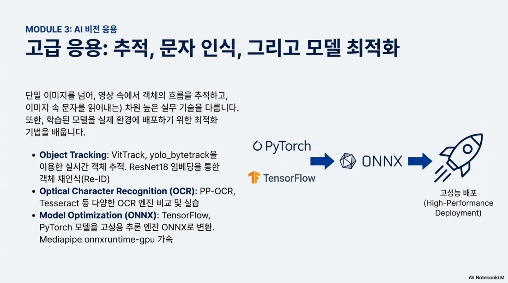

EDUCATION ARCHIVE / 2025
이미지를 읽고,
인식 결과를 쓰다
카메라 입력부터 YOLO·얼굴 인식·추적·OCR까지. 원본 교안과 실습 코드로 살펴보는 홍익대 AI 비전 수업.
인식한 결과를
프로그램에서 쓰는 수업
2025년 9월 홍익대학교 세종캠퍼스에서 진행한 OpenCV 머신러닝·딥러닝 실무 프로젝트 과정입니다. 기초 영상처리에서 모델의 출력 해석과 화면 통합까지, 팀 프로젝트에 필요한 흐름을 순서대로 쌓았습니다.

- 기초
- 이미지·영상 입출력과 좌표·색상 처리
- 응용
- 객체·얼굴·문자 인식과 추적
- 통합
- 사용자 화면과 네 팀의 프로젝트
09.01–09.04 / FOUNDATION
카메라 영상을 다룰 수 있는 기초
WSL2 · NumPy · 영상 입출력 · 마우스와 키보드
이미지는 화면에 보이는 그림이면서 동시에 숫자가 담긴 배열입니다. WSL2·VS Code·Git 환경을 준비한 뒤 NumPy로 픽셀과 채널을 다루고, OpenCV로 이미지를 읽고 저장했습니다. 마우스 좌표에 반응하고 한글을 표시하며 프로그램과 사용자가 만나는 접점을 만들었습니다.
USB 카메라를 WSL에 연결하고 영상 파일을 재생·저장하는 실습도 진행했습니다. 이후의 인식 실습은 이 입력 프레임 위에서 동작하므로, 장치 연결과 영상 입출력을 먼저 다졌습니다.

크게 보기 ↗과정 교안 3쪽. 개발 환경과 도구의 역할을 연결해 설명한 장면.

크게 보기 ↗과정 교안 4쪽. 픽셀과 배열의 관계를 학습하는 자료.
직접 다룬 것
이미지 저장, 마우스·키 입력, 도형 그리기, 한글 렌더링, 카메라 프레임과 영상 저장.
다음 실습에 남긴 기반
입력 프레임의 크기·좌표·색상 값을 읽고, 원하는 영역을 바꾸는 코드.
09.04–09.08 / IMAGE PROCESSING
색·윤곽·기하 변환으로 필요한 정보 찾기
HSV · Canny · ORB · Affine / Perspective
색상으로 대상을 찾을 때는 HSV와 inRange 마스크를, 윤곽을 확인할 때는 필터와 Canny를 사용했습니다. ORB 실습은 기준 이미지의 특징점과 카메라 프레임의 특징점을 비교해 같은 물체를 찾는 흐름으로 구성되어 있습니다.
원근 변환에서는 네 점의 대응 관계로 변환 행렬을 만들고 이미지를 다른 사각형으로 옮겼습니다. “어떤 함수를 쓰는가”와 함께 좌표와 영역이 어떻게 달라지는지 살펴보는 실습입니다.

크게 보기 ↗과정 교안 6쪽. 색공간, 필터링, 아핀·원근 변환과 객체지향 화면 구성을 함께 다룹니다.
- 색공간 변환
- 관심 영역 추출
- 필터·윤곽 확인
- 좌표 변환과 표시
09.05–09.10 / DETECTION
YOLO 결과를 화면의 동작으로 바꾸기
박스 · 분할 마스크 · 자세 키포인트 · 분류
모델이 그려 준 박스를 보는 데서 멈추지 않고 클래스 이름과 좌표를 꺼내 프로그램에서 사용했습니다. 수업의 객체 검출 코드는 cell phone을 찾으면 해당 박스의 영상 영역에 블러를 적용합니다. 인식 결과가 후속 처리의 조건이 되는 예제입니다.
분할 실습은 사람에 해당하는 마스크를 읽어 관심 영역을 다루고, 자세 추정은 키포인트를 활용합니다. 같은 YOLO 계열이라도 결과 자료구조가 다르다는 점을 실제 코드에서 확인했습니다.
과정 교안 7쪽. 무엇을 검출하느냐뿐 아니라 어떤 형태의 결과를 받는지 구분했습니다.
실습의 핵심
클래스 이름으로 대상을 고르고, 박스 좌표나 마스크를 영상 처리 조건에 연결하기.
프로젝트로 이어진 쓰임
차량과 보행자 구분, 주차 공간 점유 판단, 토마토 생육 단계 분류의 기초.
09.10–09.11 / FACE & INTERACTION
얼굴 검출과 얼굴 인식을 구분하기
Haar cascade · YuNet · SFace · MediaPipe
얼굴의 위치를 찾는 일과 두 얼굴이 같은 사람인지 비교하는 일은 서로 다릅니다. Haar cascade와 YuNet으로 얼굴과 랜드마크를 찾고 SFace로 특징을 비교하는 과정을 단계적으로 실습했습니다.
손 자세와 얼굴 분석을 영상 화면에 붙이면서 모델별 입력·출력과 화면 갱신을 함께 다뤘습니다. 수업일지에는 SFace의 한계와 프로젝트 코드 변경 시 최적화에 주의할 점을 설명한 기록도 남아 있습니다.

크게 보기 ↗과정 교안 8쪽. 얼굴 검출·인식, 손 자세와 얼굴 처리의 차이를 설명한 자료.
09.12–09.17 / ADVANCED VISION
한 장의 인식에서 추적·OCR·모델 연결로
머신러닝 · ONNX · ByteTrack · 임베딩 · OCR
머신러닝의 k-NN·결정트리·랜덤 포레스트·SVM 등과 딥러닝 개념을 비교하고, TensorFlow·PyTorch 모델 저장과 ONNX 변환을 다뤘습니다. 모델을 가져와 실행할 때 프레임워크와 추론 환경의 관계를 이해하는 단계입니다.
ViTTrack과 YOLO·ByteTrack으로 시간에 따른 객체를 추적하고, ResNet18 임베딩으로 특징을 비교하는 예제로 확장했습니다. OCR은 문자의 영역을 찾는 검출과 잘라낸 영역을 글자로 읽는 인식을 나누어 살폈으며, Tesseract·PaddleOCR 비교와 YOLO 학습도 진행했습니다.

크게 보기 ↗과정 교안 10쪽. 모델을 사용하는 실습과 학습 원리를 연결합니다.

크게 보기 ↗과정 교안 9쪽. 객체 추적, OCR, ONNX 기반 활용을 묶은 고급 응용 흐름.
INTEGRATION / TEAM PROJECT
예제를 하나의 프로그램으로 묶기
Sprite 구조 · 모드 전환 · 팀별 문제 정의
통합 실습의 MainDraw는 영상·이미지·버튼·슬라이더를 Sprite로 관리합니다. Canny, 블러, YOLO, ORB, 아핀·원근 변환, 손 자세와 얼굴 분석을 모드로 전환하며 각 기능을 한 화면에서 다루도록 구성했습니다.
9월 18일에는 팀 저장소와 발표자료를 준비하고 주제를 선정했습니다. 수업에서 다룬 입력·인식·표시의 흐름은 횡단보도, 문서 스캔, 주차장, 식물 생육이라는 네 문제로 이어졌습니다.
- 영상 입력
- 인식·처리 모드
- 화면과 인터랙션
- 팀 프로젝트 적용
자료와 기록
수업 README의 일별 기록과 hongOpencv 코드를 대조했습니다. 이미지는 「OpenCV 실전 AI 비전 프로젝트」 과정 교안의 해당 페이지입니다. README 안내 기간은 9월 2~19일, 일지는 9월 1~18일이며 팀 발표자료에는 9월 25일까지의 프로젝트 기록이 남아 있습니다.
당시 바인드소프트 소속 최수길의 강의·프로젝트 지도 경험을 정리한 기록입니다.